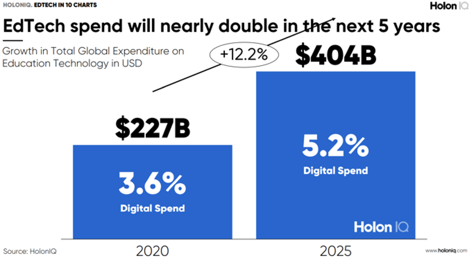
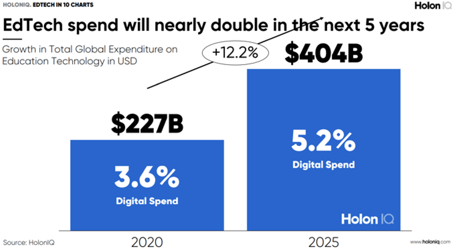

O mercado está muito aquecido, vem batendo recordes a cada ano que passa. Em 2017 o faturamento global de robôs na indústria foi de aproximadamente U$ 50 bilhões e a projeção de crescimento desse mercado para os próximos 5 anos é de 15% por ano, em média.
A Ásia continua de longe sendo o maior mercado mundial, sendo a China o País que mais tem robôs instalados e mais investimento em educação tecnológica, e coincidentemente é a maior potência mundial. Podemos ver que o brasil está muito atrás nos investimentos em robótica, isso se torna uma oportunidade para os investidores explorarem melhor esse mercado.

Mesmo com um déficit de investimentos quando comparado com outras potências mundiais, o país conta hoje com 566 edtechs das quais 50,7% são dedicadas a Educação Básica, além disso, em 2020 foram identificadas a criação de 65 novas startups focadas em educação.
Então pode-se concluir que os brasileiros e investidores confiam no ramo, além de entenderem a existência de uma necessidade por mais empresas, mais números, mais receita em jogo.